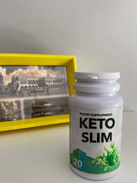

Pavel Horák
13 komentářů
Do naší redakce dostáváme hodně dopisů od našich čtenářů. Nemůžu zhubnout , to je nejdůležitější téma při očekávání plážové sezóny. Proto se neobejdete bez rady odborníka na výživu!

"Před rokem jsem úplně zrušila cukr a rychlé občerstvení, chodím do posilovny 3krát týdně, každý den klikuji a ráno chodím. Ale čím více úsilí jsem vynaložila, tím menší pokrok. Za rok jsem zhubla jen 6 kg, ale potřebuji 10-12. Co mám dělat?"
Marie, 32 let
"Hubla jsem, co si pamatuji. Nepřejídám se, fyzicky pracuji, po práci - volejbal a bazén. Ale pořád jsem tlustá! S tímto životním stylem vážím 82 kg a nehubnu. A jen co trochu polevím, sním čokoládu nebo vynechám cvičení, okamžitě naberu 4 kg. Pomoc!"
Markéta, 41 let"Ženy a muži, kteří neustále hubnou, ke mně často přicházejí doslova se slzami v očích. Pro tenký pas a štíhlé boky jsou připraveni měsíce jíst jen salát a jablka, potit se v tělocvičně, vzdát se svých oblíbených dezertů... Ale z nějakého důvodu nehubnou! Vyzkoušeli všechno, ale výsledek buď vůbec nepřichází, nebo se váha rychle vrátí po sebemenším zakolísání."
Pavel Horákodborník na výživu, odborník na zdravou výživu
Proč se to stane? Celá vina je nízká rychlost metabolismu. U lidí náchylných k plnosti je to od přírody pomalé. A stravy ho ještě více zpomalují. Proto, pokud vážíte nad normu, ostré omezení v jídle vám jen ublíží.
Nízkokalorické diety znamenají pro tělo velký stres. Naše tělo cítí, že se jedná o „hladovku“, zapne úsporný režim a akumuluje tukovou hmotu ještě rychleji - i když kombinujete dietu s pravidelným cvičením.
A naopak, čím uvolněnější je vaše tělo, tím ochotnější je nechat jít další kila. Je však obtížné dosáhnout takového stavu přirozeně. K urychlení metabolismu jsou zapotřebí speciální prostředky.
Živým příkladem je život buddhistických mnichů ve starověkých klášterech Laosu. Tráví téměř celý den seděním, v modlitbách, žijí na štědrých almužnách věřících a téměř každou noc před spaním pořádají luxusní hostiny.

Běžný Evropan se zpomaleným metabolismem by s takovým to životním stylem vážil za nedlouho 100 kg. Ale laoští mniši zůstávají štíhlí a zdraví až do stáří!
Moji kolegové tento fenomén studovali v 80. letech a ukázalo se, že mnichové mají před modlením a meditacemi povinný rituál: konzumují speciální byliny připravené podle prastarého receptu. Tyto byliny jsou pečlivě nasbírány a nasušeny, potom se nadrtí na prášek a pijí se s čistou vodou. Mnichové říkají, že jim tento produkt pomáhá udržovat tělo v kondici a chrání je před onemocněním a tloustnutím.
Prastará bylinná směs buddhistických mnichů je cenným zdrojem aminokyselin, minerálů a mikro živin, které přirozeně zrychlují metabolismus. I lidé, kterým stačí se podívat na pečivo a přiberou, mohou zhubnout snadno a už znovu nepřiberou. Aktivní ingredience v tomto produktu rozkládají lipidy z jídla a předchází ukládání tuku v oblasti boků a pasu a jemně spalují tuk z těla přirozeným způsobem.
Bylo klinicky prokázáno, že recept buddhistických mnichů aktivuje proces ketózy
v těle už hodinu po užití bylin. Tělo získá sílu, energii a urychlení regenerace. Dokonce dochází i ke
zpomalení stárnutí a zpevnění pleti.
V naší zemi si můžete koupit tento produkt ve formě kapslí . Produkt obsahuje také přírodní extrakty, které zrychlují funkce střev a odstraňují toxiny, soli a další škodlivé látky z těla. vám pomůže zhubnout ještě rychleji, než tradiční bylinná směs buddhistických mnichů. Podle mých zkušeností stačí 3-4 týdny braní a lidé zhubnou 12-15 kg, i když se nesnaží hubnout pomocí diet a cvičení.
Takto vypadají moji klienti, kteří zapojili do svého jídleníčku. Publikuji fotografie s jejich svolením:
Max, 39 let.
Před - 104 kg, po - 89 kg
 Monika, 27
let.
Monika, 27
let.
Před 92 kg, po - 74 kg
 Diana, 32 let.
Diana, 32 let.
Před - 81 kg, po - 68 kg
Eliška, 24
let.
Před - 77 kg, po - 62 kg
Nedrží dietu a prakticky neportují - maximálně tak ranní pětiminutovka. Ale díky se jejich metabolismus za měsíc dostal do rovnováhy. A teď je nadváha neohrožuje.
si můžete koupit zde. Toto je oficiální distributor. Jiné prodejce nemohu doporučit - někdy se totiž pod názvem prodávají i padělané produkty. Je tedy lepší vždy objednávat z oficiální webové stránky.
Marie
Je to skvělé! Stačí brát a výsledky ihned uvidíte: ve formě štíhlého pasu, pevnější pleti a krásných nohou.


Klára
A víte někdo, jestli se smí pít více než měsíc? V pokynech se uvádí, že kúra je 30 dní a potřebuji zhubnout více než 25 kg
Helena

Začala jsem brát tento podukt, jím vše na co mám chuť a už jsem zhubla 10 kg. Nemusím se už potit v posilovně, protože na to nemám čas ani chuť. je řešením pro lidi, jako jsem já. Doporučuji tento produkt! Zde jsou moje výsledky.
Michal
Před Vážil jsem 90 kg. V mládí jsem byl vždy štíhlý, ale postupně se mi nějak udělalo břicho a boky. Hodně jsem trénoval, ale nemohl dosáhnout své původní postavy. Poté, na radu kamaráda, jsem zkusil tento produkt, a tohle je výsledek za pár měsíců!
Jana
Viděla jsem frontu na tento produkt, když jsem byla na dovolené. Teď je mi líto, že jsem si ho nekoupila.. ještě že ho máme i u nás! A za stejnou cenu.

Pavel
Lucie , Jako doktor vám řeknu, že existují lidé, kteří mají genetickou tendenci trpět nadváhou a běžná dieta nepomáhá - potřebujete pomocníky. Pokud nemáte sklon trpět nadváhou, máte štěstí, ale ujišťuji vás, že ne každý je stejně šťastný jako vy.